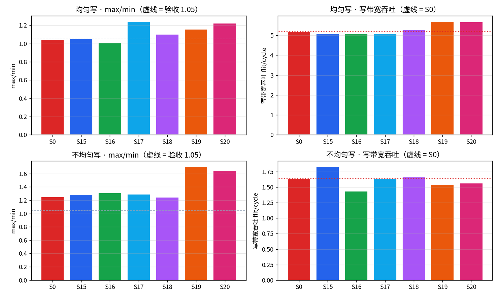
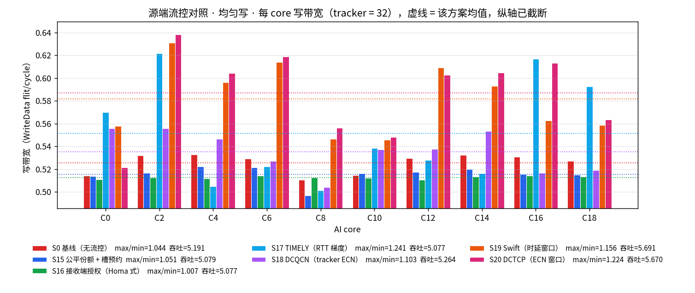
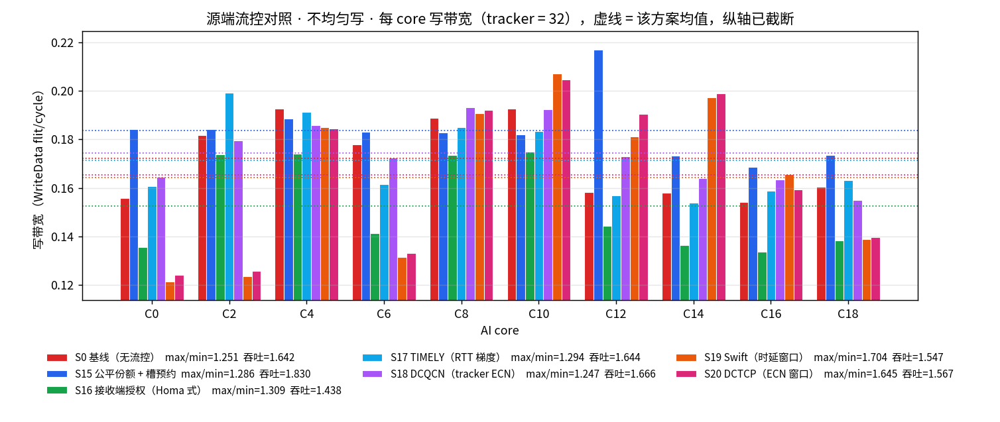
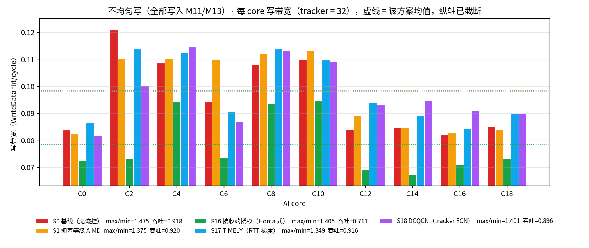
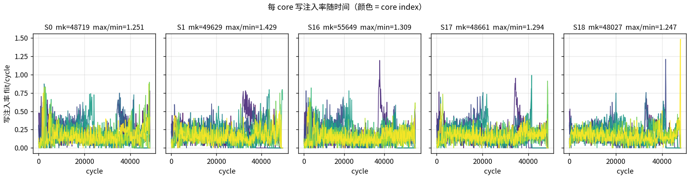
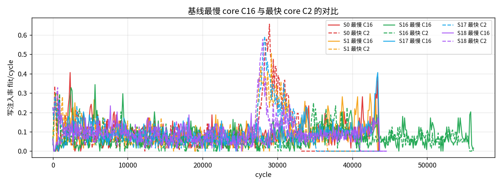
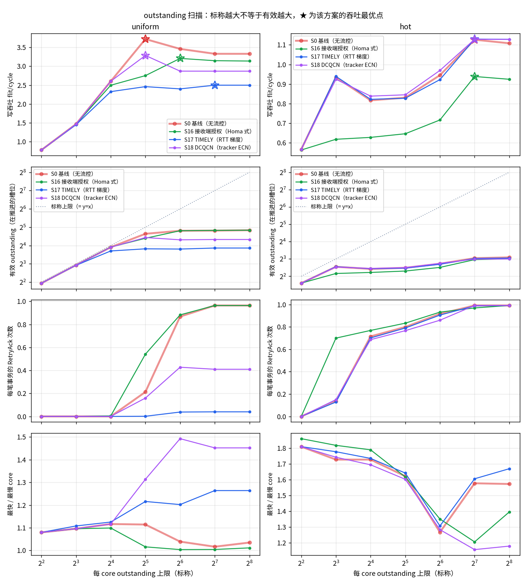
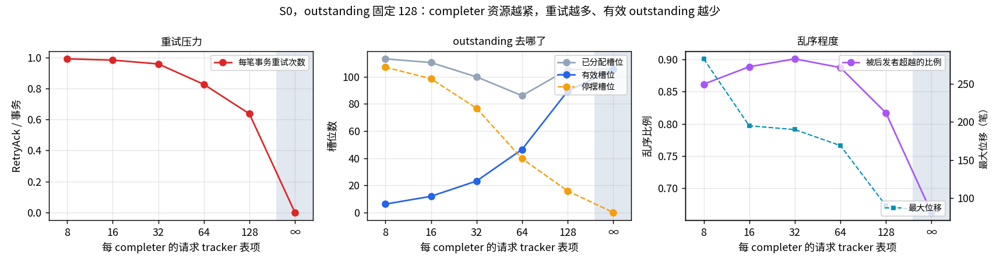
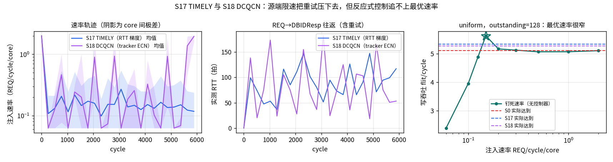

workload：10 个 AI core 对
8 个 memory 节点做均匀写，每 core
2000 笔 WriteNoSnp、每笔 4 个 WriteData flit
（每 core 8000 个数据 flit，共 20000 笔事务）。
节点 9、19 既不是 memory 也不是 AI core。
RetryAck，
在 outstanding = 128 下
几乎每笔事务都要被弹回一次（0.9721 次/事务）。
瓶颈因此从"环上的槽位"移到了"completer 的表项"，
吞吐从放开 tracker 时的 5.8038 掉到
5.1911 flit/cycle（-10.6%）。own_total_fail 高，
而赢家的 net_fail 低，于是差值大的反倒是受害者；
(c) 在环流量绝对优先，源端限速让出的空拍立刻被过路 flit 吃掉，
造不出槽位。DBIDResp 往返，DCQCN 的标记算在 completer 的 tracker
占用率上、搭 1 bit 在同一个 DBIDResp / RetryAck
上，连 CNP 都不需要。
重要前提：两篇论文的阈值常数必须重设。
照搬 T_high = 4·minRTT 会让 S17 的吞吐掉到 S0 的 1/40
——本环 RTT 的主要成分是 completer 该有的服务队列，
不是不该有的网络排队（见 10.3.1）。n_inring_blocked = 0、max_inring_hold = 0：
S15 的预约只压制上游注入，从不停住已经在环上的 flit；
S16 根本不碰环上仲裁。两者都不需要在环上增加缓冲。四个方案一眼看完（seed 0， 括号内为相对基线的吞吐差）： S0 max/min 1.0436 · S1 1.2103（-14.8%）· S15 1.0511（-2.2%）· S16 1.007（-2.2%）。

| 项目 | 取值 | 说明 |
|---|---|---|
| 节点数 / plane 数 | 20 / 2 | 两个独立的双向闭合 full ring，共用同一套几何 |
| AI core | 10 个：C0, C2, C4, C6, C8, C10, C12, C14, C16, C18 | 写发起方（CHI RN） |
| memory 节点 | 8 个：M1, M3, M5, M7, M11, M13, M15, M17 | 写目的地（completer） |
| 非终端节点 | N9, N19 | 在环上转发，但既不发起也不接收写 |
| 路由 | 最短路（跳数平局走 CW） | S0 及全部方案一致 |
| plane 选择 | least_occupied | 两个 plane 之间做负载均衡 |
| 每 core outstanding | 128 | 同时在飞的写事务上限 |
| CHI VC | REQ / RSP / DAT | REQ、RSP、DAT 三条独立 VC，各自独立信用 |
| hop 容量 | 240 flit/cycle | 20 节点 × 2 方向 × 2 plane × 3 VC，σ=1 |
| 端口 | inject 1 / leave 1（每 node 每 plane） | 三条 VC 共享同一个上下环端口 |
| 上环队列深度 | 8 | 每 (node, plane, VC) |
| 下环队列深度 | 4 | 每 (node, plane) |
| I-tag 门限 t_inj | 64 | 限制注入饥饿时长 |
| E-tag 门限 t_xfer | 4 | 限制偏转次数 |
边上的数字是该无向边的 hop 时延（拍），两个方向相同。 节点 index 顺时针递增（+1 = CW）。
| 无向边 | hop 时延（拍） | 备注 |
|---|---|---|
| C0 — M1 | 2 | |
| M1 — C2 | 2 | |
| C2 — M3 | 2 | |
| M3 — C4 | 3 | |
| C4 — M5 | 1 | |
| M5 — C6 | 3 | |
| C6 — M7 | 1 | |
| M7 — C8 | 1 | |
| C8 — N9 | 2 | |
| N9 — C10 | 4 | |
| C10 — M11 | 1 | |
| M11 — C12 | 1 | |
| C12 — M13 | 3 | |
| M13 — C14 | 1 | |
| C14 — M15 | 3 | |
| M15 — C16 | 2 | |
| C16 — M17 | 2 | |
| M17 — C18 | 2 | |
| C18 — N19 | 3 | |
| N19 — C0 | 3 | 闭合边（N19 ↔ C0） |
一笔写 = REQ(core→mem) → DBIDResp(mem→core)
→ WriteData×4(core→mem) →
Comp(mem→core)，因此实例化 REQ / RSP / DAT
三条独立 CHI VC。per-core 写带宽 = 该 core 在争用窗口内成功上环的
WriteData flit / cycle。
_launch 从不阻塞已在环上的 flit，只占用槽位；本地注入由
_can_board 拒绝——要么该有向 hop 的这条 VC 被占，要么
arr_set 显示 σ 拍内有在环 flit 即将到达。
每个 completer 有一个 32 表项的请求 tracker，
一个 REQ 从被接受起占用一个表项，直到该 completer 发出 Comp
才释放。表项用完时 completer 不排队，而是按 CHI 规定回
RetryAck 把请求方打发走，请求方必须等到一个
PCrdGrant 才能重发（机制细节见 9.1）。
设 n 个 core 实测到的写带宽为 x1, …, xn（单位 WriteData flit/cycle， 统计窗口是所有 core 都还在发的争用窗口）。全文只用两个数：
Jain 指数 J = (Σxi)2 / (n·Σxi2) 是这类研究的常用指标， 本研究实测它区分不出方案，因此不再列入表格。
原因是 Jain 是二次指标，由多数节点主导， 少数被饿死的节点对它影响有限：10 个 core 里 9 个完全均等、 剩下 1 个只有其余的 1/10，Jain 仍有 0.9191， 而 max/min 已经是 10。变异系数 CoV 与它是同一个信息的两种写法 （J = 1/(1+CoV2)），所以一并去掉。
Jain 还有一条性质与第 5 节直接相关： 所有 xi 同乘一个常数 J 不变。也就是说 整体限速不改变 Jain——S1 之所以“看起来没把公平性搞坏”， 一部分就是这个数学假象，换成 max/min 就暴露了。
除基线 S0 和按规格实现的 S1 之外，源端流控按三轴分类： 谁做决定（发送端 / 接收端）、执行器（窗口 / 速率）、 触发信号。下面先分类并写清原理与利弊，再只保留能映射到 这颗无缓存环（上下环各 1 flit/cycle/node、RTT 以十到百拍计、 completer tracker 有限）的方案，做尺度调整，最后在同一套 均匀写 / 不均匀写上比 max/min 和写带宽吞吐。
DBIDResp
不能发 WriteData），所以接收端方案几乎是零线格式成本；
发送端方案则必须另找一个执行器（漏桶或 outstanding 窗口）。| 方案 | 驱动端 | 执行器 | 触发信号 | 本 fabric 是否采用 |
|---|---|---|---|---|
| S15 公平份额 + 槽预约 | 混合：源端窗口 + 跳预约 | 窗口（每窗注入预算）+ 有界 hole | 拥塞总线：达成计数的 max-min / 欠账 | 采用（已在环上实现） |
| S16 Homa 式授权 | 接收端 | 窗口（completer 同时授权数） | least-served：给累计服务最少的源 | 采用；overcommit = 16（必须低于 tracker） |
| S17 TIMELY | 发送端 | 速率（REQ 漏桶） | RTT 梯度（REQ 上环 → DBIDResp 落地） | 采用；T_low/T_high = 8.0/24.0·minRTT |
| S18 DCQCN | 发送端（标记在接收端算） | 速率（REQ 漏桶） | completer tracker 占用的 RED + RetryAck | 采用；k = 0.8–1.0·tracker，p_max = 0.05 |
| S19 Swift | 发送端 | 窗口（在途事务数） | 时延：RTT 相对共享目标 | 采用；目标 = 8.0·max(minRTT, 20.0)，β = 0.4 |
| S20 DCTCP | 发送端 | 窗口（在途事务数） | 与 S18 同一套 tracker ECN | 采用；同一 RED，窗口初值 16.0、下限 8.0 |
| PFC / 跳级暂停 | 接收端 | 暂停（XOFF） | 下游队列过水线 | 不用：无缓存环没有可暂停的队列；暂停会冻住绝对优先的在环流量 |
| HPCC / INT | 发送端 | 速率 | 逐跳队列遥测 | 不用：无缓存、无逐跳队列，没有可量的 INT |
| CUBIC / Reno / 丢包窗口 | 发送端 | 窗口 | 丢包 / 超时 | 不用：本协议不丢包。RetryAck 是信用耗尽，事务还在 |
| BBR | 发送端 | 速率 + 窗口 | 瓶颈带宽探测 + RTT | 不用：没有可排空的 FIFO 队列，带宽探测读不到 BtlBw |
| Homa SRPT + 优先级队列 | 接收端 | 授权 + 多优先级 | 剩余消息长度 | 只用授权一半（即 S16）。无缓存环不能再叠优先级队列 |
| IB / CHI 信用（PCrd） | 接收端 | 窗口（表项） | completer 信用 | 已经是基线：ha_track + RetryAck + PCrdGrant，不是新方案 |
| XCP / RCP | 路由器 | 速率 | 逐包显式反馈 | 不用：节点不是计算速率的路由器 |
原理。沿用 S1 的专用拥塞总线，但聚合从“取 max 等级”换成 各跳达成计数的 max-min 公平份额，并给落后节点预约有界 hole： 上游注入让出那一拍，预约者自己上环。 这是唯一一个试图造槽而不是只让别人少发的方案。
优点。直接针对“在环绝对优先 → 源端限速造不出槽”这条死路； 总线不占 NoC 带宽。
缺点。预约是离散的：预约者没用上，这一拍就空了； 总线、每跳 hole 状态都是额外硬件；有限 tracker 已经把均匀写压得较齐， 预约常变成用吞吐换一点 max/min。
NoC 调整。窗口 64 拍（约 3 个 unloaded RTT，不是毫秒）；
reserve_gap = 16、reserve_max = 32，
只让真正的落后节点发 hole，避免互相取消。
原理。Homa 的核心是接收端调度网络。CHI 写已经有授权：
completer 不立刻回 DBIDResp，而是把同时未完成的授权
压在 overcommit 以下，并优先给累计服务最少的源。
固定长度的写让 SRPT 退化成公平排队。扣住授权不会造气泡——
占优的核只是暂时没数据，槽位仍归谁能用谁用。
优点。无新报文、无总线、无环上预约； 均匀写下 max/min 最齐。
缺点。overcommit 必须低于 tracker，否则与 S0
逐位相同；再扣一层授权会让 completer 更闲，吞吐掉一点。
不均匀写时授权解决不了入口 hop 被过路流量占满。
NoC 调整。overcommit = 16 （tracker 的一半）。论文的 RTTbytes 在这里就是“同时覆盖一轮握手 又不把 tracker 灌满”的授权数，不是字节。
原理。WriteNoSnp 从 REQ 上环到 DBIDResp 落地
本来就是一个 RTT，含 RetryAck 往返。梯度领先绝对时延，
在队列（这里是 tracker）堆满之前收油门。执行器是 REQ 漏桶：
灌满 tracker 的是 REQ 到达，WriteData 不能抢在授权前面。
优点。不改线格式；均匀写下把重试从 ~1 次/事务压到 ~0.3， 少占环。
缺点。必须有精确时间戳；按每核自己的 minRTT 定门槛时， 幸运短路径的核会更狠地收油门，max/min 变差； 不均匀写上 RTT 已被热点服务时间主导，梯度几乎帮不上忙。
NoC 调整。论文 T_high = 4·minRTT 假定超出 minRTT
的全是该消的排队。这里 unloaded RTT ~20，有效工作点 ~150
（completer 服务，不该消掉），照搬会把吞吐打到 S0 的几十分之一。
门槛改成 8.0 / 24.0·minRTT；
delta = 1/16，匹配每核只有几十个样本的规模。
原理。无缓存环没有可标记的队列。真正溢出的是 completer 的请求 tracker。RED 画在 tracker 占用上，RetryAck 视为 p = 1 的标记。 标记搭在协议已有的 DBIDResp / RetryAck 上，不需要 CNP。
优点。不需要时间戳；均匀写下重试下降且吞吐略高于 S0 （少了空转的 REQ/RetryAck）。
缺点。标记来得晚（tracker 已经 80%+）； 定时器必须从微秒改成拍，否则回升太慢。
NoC 调整。论文 k_min = 0.4、p_max = 0.5 会把正常工作的 tracker 当成拥塞。改为 k = 0.8–1.0、 p_max = 0.05；α / rate 定时器 = 8 / 24 拍。
原理。与 S17 同一类信号，执行器换成在途事务窗口： RTT 低于共享目标则 +1/w，高于则按超出比例乘减。 窗口对齐 BDP，一个槽空了立刻补上，比漏桶更突发。
优点。均匀写下窗口自己落到 ~16.0–32， 重试降到 0.1 以下，写吞吐高于速率方案。
缺点。乘减比漏桶狠：目标设低了会把窗口按到 BDP 以下， 核与核的 minRTT 若各自为政，幸运核会被多砍一刀； 不均匀写上时延差的是 destination，不是该被窗口抹平的拥塞。
NoC 调整。论文 β = 0.8、目标贴着 minRTT，会把窗口按死 （试跑 max/min > 8、吞吐腰斩）。 改为全环共享 base RTT，并设地板 20.0 拍——相邻 3 拍的幸运样本不得当 base； 目标 = 8.0·base（约 160 拍，对着有效工作点）； β = 0.4；窗口下限 8.0 （U 形曲线左侧悬崖在 4）。
原理。与 S18 同一套 RED 标记，DCTCP 的窗口更新： 未标记 +1/w，标记则按 α/2 乘减。α 是标记分数的 EWMA。
优点。和 S18 比，只换执行器，便于看窗口 vs 速率； 均匀写下重试压得更低（窗口本身就接近 U 形最优点）。
缺点。RetryAck 若每次都砍窗口，一笔事务会在 RetryAck 和随后的 DBIDResp 上被砍两次；热点上窗口会顶在下限，max/min 变差。
NoC 调整。RED 与 S18 共用；每个标记周期最多乘减一次 （对齐 S18 的 marked 锁）；窗口初值 16.0、 下限 8.0，单位是事务不是字节。
| 方案族 | 为什么在这颗 NoC 上不适用 |
|---|---|
| PFC | 作用对象是队列。环上没有队列；在环 flit 绝对优先，一暂停就把过路流量冻在注入口。 |
| HPCC / INT | 依赖 hop 队列深度。bufferless 的 hop 占用是 0/1，不是可以积分的队列。 |
| 丢包窗口（CUBIC 等） | CHI 写不丢包。RetryAck 之后事务继续，当成丢包会把窗口砍在一次往返都覆盖不了的深度。 |
| BBR | 用排队排空估带宽。这里的 RTT 胀大多半是 completer 服务，不是该消掉的网络队列。 |
| Homa 优先级 | SRPT 需要多优先级出口。本环每 (node, plane) 一个端口、三条 VC 共享，没有第二套优先级仲裁。 |
| XCP / RCP | 要把速率写进包，由路由器算。本节点只做 I-tag / E-tag。 |
硬件相同：上下环各 1 个端口、tracker = 32、 outstanding = 128、K = 2000。 S0 是对照基线，不参与“源端方案”分类。

均匀写：
| 流量 | 方案 | makespan | max/min | 最低 BW | 最高 BW | 吞吐 flit/cycle | 吞吐差 | 重试/事务 | 偏转 | 上环失败 |
|---|---|---|---|---|---|---|---|---|---|---|
| 均匀写 | S0 基线（tracker = 32） | 15411 | 1.0436 | 0.51059 | 0.53284 | 5.1911 | +0.0% | 0.9721 | 37441 | 209453 |
| 均匀写 | S15 公平份额 + 槽预约 | 15751 | 1.0511 | 0.49674 | 0.52213 | 5.079 | -2.2% | 0.984 | 36847 | 198463 |
| 均匀写 | S16 接收端授权（Homa 式） | 15757 | 1.007 | 0.51067 | 0.51427 | 5.0771 | -2.2% | 0.9853 | 35976 | 190306 |
| 均匀写 | S17 TIMELY（RTT 梯度） | 15757 | 1.2413 | 0.50109 | 0.62199 | 5.0771 | -2.2% | 0.2885 | 25444 | 145824 |
| 均匀写 | S18 DCQCN（tracker ECN） | 15198 | 1.1025 | 0.50413 | 0.55583 | 5.2639 | +1.4% | 0.3669 | 27477 | 156319 |
| 均匀写 | S19 Swift（时延窗口） | 14057 | 1.1562 | 0.54579 | 0.63106 | 5.6911 | +9.6% | 0.0871 | 24514 | 157729 |
| 均匀写 | S20 DCTCP（ECN 窗口） | 14110 | 1.2244 | 0.52134 | 0.63831 | 5.6697 | +9.2% | 0.0272 | 23322 | 154343 |

不均匀写（全部写入相邻的 M11/M13）：
| 流量 | 方案 | makespan | max/min | 最低 BW | 最高 BW | 吞吐 flit/cycle | 吞吐差 | 重试/事务 | 偏转 | 上环失败 |
|---|---|---|---|---|---|---|---|---|---|---|
| 不均匀写 | S0 基线（tracker = 32） | 48719 | 1.2508 | 0.15409 | 0.19273 | 1.6421 | +0.0% | 0.8908 | 60106 | 95778 |
| 不均匀写 | S15 公平份额 + 槽预约 | 43707 | 1.2864 | 0.16855 | 0.21681 | 1.8304 | +11.5% | 0.9609 | 62383 | 101936 |
| 不均匀写 | S16 接收端授权（Homa 式） | 55649 | 1.3089 | 0.13372 | 0.17502 | 1.4376 | -12.5% | 0.9172 | 48825 | 66606 |
| 不均匀写 | S17 TIMELY（RTT 梯度） | 48661 | 1.2937 | 0.15401 | 0.19923 | 1.644 | +0.1% | 0.8752 | 61306 | 96352 |
| 不均匀写 | S18 DCQCN（tracker ECN） | 48027 | 1.2469 | 0.15494 | 0.19319 | 1.6657 | +1.4% | 0.8886 | 62059 | 92236 |
| 不均匀写 | S19 Swift（时延窗口） | 51710 | 1.7036 | 0.12147 | 0.20694 | 1.5471 | -5.8% | 0.5373 | 51895 | 65675 |
| 不均匀写 | S20 DCTCP（ECN 窗口） | 51044 | 1.6447 | 0.12434 | 0.2045 | 1.5673 | -4.6% | 0.5084 | 51691 | 64540 |

destination 几何重新拉开各核。窗口方案（S19 / S20） 把窗口压到下限附近，max/min 走到 1.7036 / 1.6447， 吞吐也略低于 S0。 S15 的槽预约在这个场景反而把吞吐抬到 1.8304 （+11.5%）——热点把过路流量堆在少数 hop 上， hole 第一次真正造出了槽位。 S16 两个指标都不如 S0：授权再扣一层，completer 更闲。
读法：要齐，看 S16（只在均匀、可接受少许吞吐时）； 要吞吐、且流量接近均匀，看 S19 / S20 / S18； 流量打进少数 mem 时，只有 S15 的预约还在加吞吐， 窗口/速率都会误伤离热点近的核。S1 两条都更差，见第 5 节。
| 下界 | cycle | 含义 |
|---|---|---|
| LB_link 每 VC 独立链路 | 7120 | REQ/RSP/DAT 各占一条 VC，取三者最大 |
| LB_port 端口合并 | 6353 | inject / leave 每 (node, plane) 只有一个端口，三 VC 共享 |
| LB_cut 割集 | 5012 | 跨割面的流量除以割面上的有向链路数 |
| LB_txn 事务串行链 | 91 | REQ→DBIDResp→WriteData→Comp 两个来回 |
| bound | 7120 | 以上取最大 |
makespan 下界 7120 拍，由 LB_link 决定， 即最忙的那条有向链路上、DAT VC 的容量。
五个方案都在 tracker = 32、 outstanding = 128 下测量。 S0 是无流控基线；对照是 S1、S16，以及 S17 / S18。
均匀写（每个 core 均匀写全部 8 个 mem）：
| 方案 | makespan | max/min | 最低 BW | 最高 BW | 吞吐 flit/cycle | 吞吐差 | 重试/事务 | 偏转 | 上环失败 |
|---|---|---|---|---|---|---|---|---|---|
| S0 基线（tracker = 32） | 15411 | 1.0436 | 0.51059 | 0.53284 | 5.1911 | +0.0% | 0.9721 | 37441 | 209453 |
| S1 拥塞等级 AIMD | 18084 | 1.2103 | 0.41675 | 0.50438 | 4.4238 | -14.8% | 0.7715 | 27987 | 123574 |
| S16 接收端授权（Homa 式） | 15757 | 1.007 | 0.51067 | 0.51427 | 5.0771 | -2.2% | 0.9853 | 35976 | 190306 |
| S17 TIMELY（RTT 梯度） | 15757 | 1.2413 | 0.50109 | 0.62199 | 5.0771 | -2.2% | 0.2885 | 25444 | 145824 |
| S18 DCQCN（tracker ECN） | 15198 | 1.1025 | 0.50413 | 0.55583 | 5.2639 | +1.4% | 0.3669 | 27477 | 156319 |
| 每 completer 的请求 tracker | makespan | 吞吐 | max/min | 最低 BW | 最高 BW | 重试/事务 | 峰值占用表项 | 有效 outstanding | 延迟 p99 |
|---|---|---|---|---|---|---|---|---|---|
| ∞（环受限） | 13784 | 5.8038 | 1.176 | 0.54863 | 0.64516 | 0.0 | 183 | 114.2 | 13341 |
| 32（本报告基线） | 15411 | 5.1911 | 1.0436 | 0.51059 | 0.53284 | 0.9721 | 32 | 23.6 | 15160 |

S16 最齐（max/min 1.007）但更矮； S17 / S18 把重试压到 0.2885 / 0.3669， S17 的 max/min 反而是五个里最高的。注意纵轴已截断。


不均匀写（全部写入相邻的 M11/M13， 角色不变、只改目的地几何）：
| 方案 | makespan | max/min | 最低 BW | 最高 BW | 吞吐 flit/cycle | 吞吐差 | 重试/事务 | 偏转 | 上环失败 |
|---|---|---|---|---|---|---|---|---|---|
| S0 基线（tracker = 32） | 48719 | 1.2508 | 0.15409 | 0.19273 | 1.6421 | +0.0% | 0.8908 | 60106 | 95778 |
| S1 拥塞等级 AIMD | 49629 | 1.4288 | 0.14879 | 0.2126 | 1.612 | -1.8% | 0.9593 | 53228 | 83351 |
| S16 接收端授权（Homa 式） | 55649 | 1.3089 | 0.13372 | 0.17502 | 1.4376 | -12.5% | 0.9172 | 48825 | 66606 |
| S17 TIMELY（RTT 梯度） | 48661 | 1.2937 | 0.15401 | 0.19923 | 1.644 | +0.1% | 0.8752 | 61306 | 96352 |
| S18 DCQCN（tracker ECN） | 48027 | 1.2469 | 0.15494 | 0.19319 | 1.6657 | +1.4% | 0.8886 | 62059 | 92236 |

不均匀写把全部流量灌进 M11/M13。 S0 的 max/min 从均匀写的 1.0436 回到 1.2508—— destination 几何重新拉开了各核，retry 背压盖不住。 S1 两个指标同时更差；S16 在这个场景上吞吐和公平性都不如 S0； S17 / S18 与 S0 几乎贴在一起，重试也压不下去 （0.8908 次/事务）。


本节的归因全部在无限 tracker（环受限）的参照上做， 因为只有那里环是唯一约束、位置效应没有被 retry 背压压平； 4.4 再回到有限 tracker 的基线，说明这条因果链被什么盖住了。
| core | 相邻 mem 数 | 到 mem 平均跳数 | S0 写带宽 | 上环成功率 | hop_busy 失败 | I-tag 失败 | outstanding 失败 | 出向平均 λ |
|---|---|---|---|---|---|---|---|---|
| C0 | 1 | 5.0 | 0.51412 | 0.3505 | 14813 | 9 | 0 | 2.5 |
| C2 | 2 | 5.0 | 0.53184 | 0.3708 | 13564 | 13 | 0 | 2.0 |
| C4 | 2 | 5.0 | 0.53284 | 0.3737 | 13407 | 3 | 0 | 2.0 |
| C6 | 2 | 5.0 | 0.52917 | 0.3728 | 13448 | 13 | 0 | 2.0 |
| C8 | 1 | 5.0 | 0.51059 | 0.3424 | 15343 | 19 | 0 | 1.5 |
| C10 | 1 | 5.0 | 0.51472 | 0.3481 | 14974 | 10 | 0 | 2.5 |
| C12 | 2 | 5.0 | 0.52944 | 0.365 | 13915 | 4 | 0 | 2.0 |
| C14 | 2 | 5.0 | 0.5323 | 0.3696 | 13630 | 15 | 0 | 2.0 |
| C16 | 2 | 5.0 | 0.5307 | 0.3649 | 13925 | 0 | 0 | 2.0 |
| C18 | 1 | 5.0 | 0.52717 | 0.3522 | 14704 | 13 | 0 | 2.5 |

带宽与实测上环成功率的相关是
r = 0.973（Spearman 0.9483），
与 hop_busy 失败次数强负相关；
与解析过路流量的相关很弱（r = 0.0191）——
过路流量的总量差别不大，差别在于它什么时候正好卡住本地注入。
I-tag 类失败占比很小：_itag_blocks 只压制竞争的其他注入者，
对在环 flit 无效，所以它能限制饥饿时长，却造不出槽位。
上面三小节说的是：能不能上环决定了一个 core 的带宽， 而能不能上环取决于它身边的过路流量，也就是位置。 这条链有一个前提——上了环就一定被接收。 把 completer 的请求 tracker 收到 32 个表项之后， 这个前提不再成立。
有限 tracker 下带宽与相邻 mem 的相关 r = 0.8639，无限 tracker 下 r = 0.9651。 full ring 上这两个都接近零；不均匀写才把位置重新拉开。
total_fail 与 net_fail（只计纯粹由在环占用造成的失败），
等级 = min(7, count // 8)。CongestionBus 专用广播总线，不占环上 hop，
延迟 1 拍。= level_of(own_total_fail −
max_received_net_fail)；罚则 budget ← max(min, ⌊budget·α⌋)，
α = 0.75 / 0.5 / 0.25；奖励 budget ← min(window, budget + β)，
β = 16 / 8 / 2。| window | α/β 档位 | makespan | max/min | 最低 BW | 最高 BW | 吞吐 |
|---|---|---|---|---|---|---|
| 64 | spec | 18084 | 1.2103 | 0.41675 | 0.50438 | 4.4238 |
| 64 | harsh | 22544 | 1.1645 | 0.33607 | 0.39135 | 3.5486 |
| 64 | gentle | 16031 | 1.1045 | 0.48425 | 0.53487 | 4.9903 |
| 128 | spec | 24119 | 1.171 | 0.31889 | 0.37341 | 3.3169 |
| 128 | harsh | 29882 | 1.1871 | 0.26 | 0.30865 | 2.6772 |
| 128 | gentle | 18852 | 1.171 | 0.40508 | 0.47433 | 4.2436 |
window × α/β 档位扫描。

三条机理，都被数据证实，而且都不是调参能修的—— 它们来自 S1 的聚合方式与执行端，不是来自 α/β 的取值。
(a) max 聚合保住了贫富比例。共享同一条通路的 core 收到同一个 拥塞等级，于是乘以同一个 α。等比缩小不改变贫富比值： 所有人的预算一起乘 0.75，最快与最慢的比一分不变， 只有总量下降。这就是第 2 节那条“同乘常数 Jain 不变”的性质在起作用—— 也正因为如此，用 Jain 看 S1 会觉得“公平性没坏”， 换成 max/min 才看得到它其实更差了。
(b) 差值规则把信号搞反了。被饿死的 core
own_total_fail 很高；而占优的 core 正在赢，
它的 net_fail 很低，于是受害者收到的
max_received_net_fail 很小、差值很大 →
受害者惩罚自己；赢家差值 ≈ 0，继续 +β。
这是放大不公平的正反馈。
(c) 源端速率造不出槽位。在环优先是绝对的，被限速的 core 让出的空拍立刻被过路 flit 吃掉，被饿死的 core 一无所获。 所以 S1 只是把总量压下去。
保留专用总线和窗口结构，换掉聚合什么，并加一个仲裁钩子。
(等级, 本窗口成功数, 累计成功数,
active, 各出向公平份额)。reserve_gap 的节点，通过总线预约未来若干拍的
(plane, dir, VC) 槽；上游节点不得注入会在预约窗口内到达该槽的
flit。资格用全环累计量判定而不是各自的本地目标——按本地判定时几乎
每个节点都认为自己落后，预约互相抵消，全环白白付出上万次让路。fair_tol 时控制器完全不接管，公平的场景下零代价。n_inring_blocked 与
max_inring_hold 全程为 0，无缓存前提没有被偷偷放弃。

吞吐这点损失来自预约压制上游注入时留下的空拍。 在环受限的参照上这笔钱是花得值的（那里 max/min 是 1.176， 最慢 core 能被实实在在抬上来）； 在有限 tracker 的基线上最慢 core 只从 0.51059 变成 0.49674（0.97 倍）， 钱花了，货没买到多少。
预约是离散机制，单一种子容易把某个参数点衬托得过好， 所以把 S0 与 S15 在多个随机种子上重跑。
| seed | S0 max/min | S0 吞吐 | S15 max/min | S15 吞吐差 | S16 max/min | S16 吞吐差 |
|---|---|---|---|---|---|---|
| 1 | 1.0785 | 5.1706 | 1.0054 | -2.29% | 1.0106 | -2.67% |
| 2 | 1.0373 | 5.2005 | 1.0521 | -2.16% | 1.0045 | -3.47% |
结论要分两句说清楚，因为它们指向不同的事：
吞吐代价的来源没有变：在严格无缓存、在环绝对优先的环上， 唯一能把槽位让给弱者的手段就是让强者的上游空一拍， 这一拍在强者本来能用满的时候就是净损失。
S15 的问题不在于不公平，而在于为公平付的钱太贵： 一条专用广播总线、每 (node, VC) 的 AIMD 状态机、 再加上环上的槽预约逻辑，换来 2.2% 的吞吐下降， 而且换到的公平性还不稳定。下面这条路几乎不花硬件。
WriteNoSnp 明文规定：拿到 DBIDResp
之前不许发 WriteData。也就是说，
completer 本来就掌握着"哪个 core、什么时候可以把写数据放上环"的授权权，
它就是 Homa 的 GRANT。基线把这个权力浪费了——REQ 一到就立刻授权。
S16 不改任何报文格式，只改发放时机与发放顺序。overcommit 个未完成授权。这是 Homa 的过量授权度，
也对应 Homa 的 RTTbytes：太小则 completer 自己空转，
太大则退化成无管控的基线。这是唯一的旋钮。| overcommit | makespan | max/min | 吞吐 | 实测峰值授权 | 授权等待均值 | 事务延迟 p99 |
|---|---|---|---|---|---|---|
| 2 | 45285 | 1.0106 | 1.7666 | 2 | 481.85 | 43697 |
| 4 | 28082 | 1.0097 | 2.8488 | 4 | 271.85 | 27171 |
| 8 | 19047 | 1.0087 | 4.2001 | 8 | 140.78 | 18665 |
| 16 | 15757 | 1.007 | 5.0771 | 16 | 51.84 | 15494 |
| 24 | 15422 | 1.0668 | 5.1874 | 24 | 12.49 | 15139 |
| 32 | 15411 | 1.0436 | 5.1911 | 32 | 0.0 | 15160 |
| 48 | 15411 | 1.0436 | 5.1911 | 32 | 0.0 | 15160 |
| 64 | 15411 | 1.0436 | 5.1911 | 32 | 0.0 | 15160 |
| 128 | 15411 | 1.0436 | 5.1911 | 32 | 0.0 | 15160 |
| ∞（= S0 的授权策略） | 15411 | 1.0436 | 5.1911 | 32 | 0.0 | 15160 |
overcommit ≥ 32
（= 请求 tracker 的表项数）之后，整行数字与 S0 逐位相同。
原因是 S16 唯一的动作是扣住授权，
而它只能从 tracker 之下扣——一个 REQ 既然被 tracker 收下了，
在配额高于 tracker 时就一定是可授权的，S16 于是退化成"一到就授权"，
也就是 S0 换了个名字。最后一行 overcommit = ∞
就是基线策略，max/min 回到 1.0436。test_s16_grants_below_the_tracker 钉住，
避免以后有人把它调到 tracker 之上、得到一份"S16 == S0"的假结果。吞吐这一点损失是从哪来的？在有限 tracker 的基线上， S16 不再像无限 tracker 时那样"更公平又更快"。 原因是它要压制的那个不公平已经被 retry 背压压掉了大半 （4.4 节），剩下的位置优势只值 1.0436 → 1.007 这一小段，而把 overcommit 压到 16 （tracker 的一半）就会让 completer 在切换请求方的间隙偶尔空转， 这部分是净损失。 换句话说，tracker 已经替 S16 做了一部分工作， S16 能再赚到的公平性变少了，但它要付的空转代价没变。
这也是为什么 S16 在无限 tracker 的参照上更好看： 那里 max/min 是 1.176，有大量不公平可供消除， 拉平尾部换来的 makespan 收益盖得住空转损失。
| 变体 | makespan | max/min | 吞吐 | 授权等待均值 |
|---|---|---|---|---|
| least_served + eager | 15757 | 1.007 | 5.0771 | 51.84 |
| round_robin | 15776 | 1.0201 | 5.071 | 51.41 |
| no eager grant | 15757 | 1.007 | 5.0771 | 51.47 |
把"累计被服务最少优先"换成朴素轮询，公平性会退一档 ——说明跟踪累计服务量是必要的，仅靠顺序轮转不够， 因为不同 core 把授权兑现成上环的速度本来就不一样。 关掉 eager 授权在满载下没有区别（满载时本来就没有"未饱和"的时刻）， 它只影响轻载延迟，所以是免费的。
| 代价项 | S0 | S15 | S16 | S17 | S18 |
|---|---|---|---|---|---|
| 专用拥塞总线 | 无 | 有，79 bit × 4920 次 | 无 | 无 | 无 |
| 环上槽预约逻辑 | 无 | 有，52774 次预约 | 无 | 无 | 无 |
| 新增报文类型 | 无 | 无（走总线） | 无（复用 DBIDResp） | 无（RTT 从 DBIDResp 量） | 无（标记位搭 DBIDResp / RetryAck，不需要 CNP） |
| completer 写缓冲（峰值授权） | 32（≈128 flit，由 tracker 夹住） | 32（同基线，不额外约束） | 16（≈64 flit，主动压到 tracker 之下） | 32（同基线） | 32（同基线） |
| 核内速率控制器 | 无 | 每 (node,VC) AIMD 预算 + 累计欠账 | 无 | 每 core：漏桶 + minRTT + RTT 梯度 EWMA | 每 core：漏桶 + α EWMA + 两个定时器 |
| completer 侧状态 | 无 | 无 | 每源 core 的授权队列 + 累计服务量 | 无 | tracker 占用率比较器 + RED 随机数 |
| 需要精确时间戳 | 否 | 否 | 否 | 是（RTT 是唯一信号） | 否 |
| 方案 | window | 广播次数 | 每次 bit | 总 bit | 预算拒绝 | AIMD 降 | AIMD 升 | 预约槽 | 预约命中 |
|---|---|---|---|---|---|---|---|---|---|
| S1 拥塞等级 AIMD | 64 | 5640 | 6 | 33840 | 137461 | 256 | 2564 | 0 | 0 |
| S15 公平份额 + 槽预约 | 64 | 4920 | 79 | 388680 | 4820 | 62 | 177 | 52774 | 8932 |
专用广播总线不占用任何环上 hop，按窗口边界发一次。
S1 每次 6 bit（两个 3 bit 等级）；S15 增加 8 bit 本窗口成功数、
16 bit 累计数、1 bit active，以及 6 个 8 bit 出向公平份额。
窗口 64 拍发一次，
折算到每拍的线上开销可以忽略；面积在
rg_sched_cost.py 中单列。
S16 不在这张表里，因为它没有总线——它的控制信号就是协议本来要发的 DBIDResp。
第 3 节已经给出了基线（tracker = 32） 与放开 tracker 的对照：让 completer 变成无限接收资源， 基线策略实测峰值会同时压着 185 个未完成请求， 真实的 HA 不可能有那么大的请求 tracker。 前面几节关心的是这个压力对公平性做了什么， 本节关心它对效率做了什么——为什么把 outstanding 开大不再有收益， 以及为什么最优值不是一个可以静态写死的常数。
RetryAck
把请求方打发走；请求方不得自行重发，必须等到一个
PCrdGrant（protocol credit grant）才能再送一次。
两者都是单 flit 的 RSP，不需要新增 VC，也不需要新增总线。建模要点，以及每一条为什么必须这样：
PCrdGrant 的那一刻就把
tracker 表项记在被授信者名下，重发的 REQ 到达时无条件接受。
否则一个新发的 REQ 会抢走这个表项，被授信者再次被退回，
形成活锁。Comp 时释放，
随即把信用交给等待队列的队首。ha_track = 0 时全部逻辑惰性，
与第 3 节那张对照表里"tracker = ∞"那一行完全等价（回归
retry_off_equals_baseline 逐位比对 makespan、
上环时刻、板载失败数），所以两个基线之间唯一的差别就是这一个参数。
S0 在 uniform 上的逐点数据（★ 为吞吐最优点）：
| 标称 outstanding | makespan | 吞吐 | 有效 outstanding | 已分配均值 | 其中停摆 | 重试/事务 | 乱序比例 | 最大位移 | max/min | 延迟 p99 |
|---|---|---|---|---|---|---|---|---|---|---|
| 4 | 13100 | 2.4427 | 3.82 | 3.82 | 0.0 | 0.0 | 0.58875 | 367 | 1.08 | 12801 |
| 8 | 8151 | 3.9259 | 7.57 | 7.57 | 0.0 | 0.0 | 0.64463 | 284 | 1.0767 | 7890 |
| 16 ★ | 5777 | 5.5392 | 15.03 | 15.03 | 0.0 | 0.0 | 0.66963 | 149 | 1.0649 | 5665 |
| 32 | 5804 | 5.5134 | 23.14 | 28.64 | 5.51 | 0.4001 | 0.76925 | 138 | 1.1573 | 5683 |
| 64 | 6175 | 5.1822 | 23.04 | 54.31 | 31.27 | 0.8785 | 0.88225 | 209 | 1.0951 | 6041 |
| 128 | 6259 | 5.1126 | 23.15 | 99.95 | 76.8 | 0.9589 | 0.90113 | 190 | 1.0936 | 6142 |
| 256 | 6558 | 4.8795 | 22.59 | 167.83 | 145.24 | 0.9617 | 0.90725 | 276 | 1.0892 | 6388 |
注意有效 outstanding 在拐点之后就饱和了， 这是整节的核心：它的上限由 completer 的 tracker 决定 （8 个 completer × 32 表项， 分给 10 个 core）， 标称值超过这条线之后，多出来的每一个槽位都只是多一个停摆的槽位。
把 tracker 从紧到松扫一遍，看重试压力与乱序怎么跟着走：

本模型里乱序有两个独立来源，必须分开说，否则会把网络本身的乱序 记到重试头上：
如果 core 必须按发起顺序释放槽位（in-order 完成队列， 真实 AIC 常见），乱序就直接变成队头阻塞：
| tracker | 退休方式 | makespan | 吞吐 | 已分配槽位 | 停摆（等信用） | 队头阻塞（等前序） | 有效槽位 | 峰值滞留 | 接受乱序 | 退休乱序 |
|---|---|---|---|---|---|---|---|---|---|---|
| ∞ | 乱序 | 5571 | 5.744 | 105.66 | 0.0 | 0.0 | 105.66 | 0 | 0.662 | 0.85587 |
| ∞ | 按序 | 5497 | 5.8214 | 107.18 | 0.0 | 19.94 | 87.23 | 67 | 0.6175 | 0.81937 |
| 32 | 乱序 | 6259 | 5.1126 | 99.95 | 76.8 | 0.0 | 23.15 | 0 | 0.90113 | 0.913 |
| 32 | 按序 | 6206 | 5.1563 | 101.97 | 43.29 | 35.68 | 23.0 | 93 | 0.867 | 0.89563 |
建模时踩到一个真实的坑，值得记下来：
按序退休时不能用"未完成事务计数"来做 outstanding 门槛。
计数会被更年轻的、已完成但不许退休的事务填满，
而唯一能解开它们的那笔老事务就再也发不出去——真死锁。
正确的门槛是发起序号的连续窗口
（seq < retire_head + outstanding），
也就是 reorder buffer 本来的样子。回归
inorder_retire_never_better 用一个足够长的批次钉住这一点。
hot 保持同样的角色分配，
只把所有写集中到 2 个相邻的 memory 节点上
（M11、M13），
completer 侧压力大得多。
| workload | 方案 | 最优标称 outstanding | 该点吞吐 | 该点有效 outstanding | 该点重试/事务 | 固定 128 的吞吐 | 固定值的损失 |
|---|---|---|---|---|---|---|---|
| uniform | S0 基线（无流控） | 16 | 5.5392 | 15.03 | 0.0 | 5.1126 | -7.7% |
| uniform | S16 接收端授权（Homa 式） | 32 | 5.4293 | 21.79 | 0.4475 | 5.0251 | -7.4% |
| uniform | S17 TIMELY（RTT 梯度） | 128 | 5.3476 | 21.09 | 0.2707 | 5.3476 | +0.0% |
| uniform | S18 DCQCN（tracker ECN） | 16 | 5.5392 | 15.03 | 0.0 | 5.2744 | -4.8% |
| hot | S0 基线（无流控） | 128 | 1.8945 | 6.91 | 0.992 | 1.8945 | +0.0% |
| hot | S16 接收端授权（Homa 式） | 128 | 1.7433 | 6.74 | 0.992 | 1.7433 | +0.0% |
| hot | S17 TIMELY（RTT 梯度） | 128 | 1.9132 | 6.9 | 0.9902 | 1.9132 | +0.0% |
| hot | S18 DCQCN（tracker ECN） | 128 | 1.9178 | 6.82 | 0.992 | 1.9178 | +0.0% |
S15 和 S16 动的都是谁能用这一拍。数据中心传输领域从另一头解决同一个 问题：仲裁不动，把源端的发送速率压下去，让拥塞根本不形成。 这条路上有两个定义性方案，而且都能不加任何新报文地映射到 CHI。
WriteNoSnp 规定拿到 DBIDResp 之前不许发数据，
所以"REQ 上环 → DBIDResp 被排空"就是一个 RTT 样本，
量在协议本来就要发的报文上，零额外开销。
TIMELY 的洞见是 RTT 的梯度比绝对值更早：队列还没堆起来时梯度就已经转正。
更新式用论文原式，阈值以实测 minRTT 的倍数表示
（T_low = 8.0·minRTT、
T_high = 24.0·minRTT、
β = 0.8、δ = 0.06250、HAI 门槛
5 次）。
关键是样本跨越重试往返，所以被退回的请求会表现为一个很大的 RTT，
控制器看得见。DBIDResp / RetryAck
上（+1 bit），连 CNP 报文都不需要，
比真实 DCQCN 还便宜。速率侧是标准 QCN 状态机
（α 的 EWMA g = 0.06250、每 8 拍最多降一次、
fast recovery 5 轮 → additive → hyper）。rate_pinned_equals_s0 保证了
漏桶是它们唯一改动的东西。在评价两个控制器之前，先问一个更基本的问题：
存在一个好的注入速率吗？把漏桶的速率钉成常数
（pace_min = pace_init = pace_max，控制器完全不动），
扫一遍：
| 钉死的注入速率 REQ/cycle/core | makespan | 吞吐 | 重试/事务 | 有效 outstanding | 已分配均值 | max/min | 延迟 p99 |
|---|---|---|---|---|---|---|---|
| 0.06 | 13372 | 2.3931 | 0.0 | 3.73 | 3.73 | 1.0038 | 13208 |
| 0.1 | 8081 | 3.9599 | 0.0 | 7.54 | 7.54 | 1.0038 | 7959 |
| 0.125 | 6543 | 4.8907 | 0.0 | 11.24 | 11.24 | 1.0044 | 6409 |
| 0.15 ★ | 5679 | 5.6348 | 0.1214 | 20.55 | 22.65 | 1.0289 | 5571 |
| 0.2 | 6183 | 5.1755 | 0.8465 | 23.16 | 78.8 | 1.0551 | 6022 |
| 0.3 | 6236 | 5.1315 | 0.9357 | 22.93 | 92.17 | 1.0782 | 6059 |
| 0.5 | 6307 | 5.0737 | 0.9473 | 22.87 | 96.57 | 1.1323 | 6136 |
| 1.0 | 6305 | 5.0753 | 0.9556 | 22.91 | 97.05 | 1.1103 | 6132 |
| 2.0 | 6259 | 5.1126 | 0.9589 | 23.15 | 99.95 | 1.0936 | 6142 |

uniform，outstanding=128、tracker=32 （S16 的 overcommit = 16，理由见 10.4）：
| 方案 | makespan | 吞吐 | max/min | 重试/事务 | 有效 outstanding | 乱序比例 | 延迟 p99 | 平均注入速率 | ECN 标记数 |
|---|---|---|---|---|---|---|---|---|---|
| S0 基线（无流控） | 6259 | 5.1126 | 1.0936 | 0.9589 | 23.15 | 0.90113 | 6142 | — | — |
| S16 接收端授权（Homa 式） | 6368 | 5.0251 | 1.039 | 0.964 | 23.47 | 0.8705 | 6176 | — | — |
| S17 TIMELY（RTT 梯度） | 5984 | 5.3476 | 1.1852 | 0.2707 | 21.09 | 0.72725 | 5828 | 0.15781 | — |
| S18 DCQCN（tracker ECN） | 6067 | 5.2744 | 1.1348 | 0.3566 | 20.45 | 0.7275 | 5914 | 0.41792 | 2901 |
T_high = 4·minRTT 等于宣布"永久拥塞"，
控制器一路降到地板。实测：用论文值时 S17 的吞吐只有 0.117
（比 S0 差 40 倍），rate 被压到 1/512 就再也上不来。pace_min = 0.0625 不是随便设的，
它必须高到让反馈回路继续有输入。rate_timer = 300 拍意味着控制器要连续两个往返
待在它已知安全的速率之下。改成 24 拍后
S18 从 4.03 抬到 5.2744。rg_ring2_rate.py 里连同理由一起记着。gq 可以无限排队 REQ。
tracker 有限之后，代价被诚实拆成两笔——
便宜的 tracker 表项（地址 + srcID + 少量状态）和
贵的写数据缓冲（每笔 4 flit），
而 S0 把两者 1:1 绑死。S16 只压住后者。s16_grants_below_tracker 钉住。| 代价项 | S0 | S15 | S16 | S17 | S18 |
|---|---|---|---|---|---|
| 专用拥塞总线 | 无 | 有，79 bit × 4920 次 | 无 | 无 | 无 |
| 环上槽预约逻辑 | 无 | 有，52774 次预约 | 无 | 无 | 无 |
| 新增报文类型 | 无 | 无（走总线） | 无（复用 DBIDResp） | 无（RTT 从 DBIDResp 量） | 无（标记位搭 DBIDResp / RetryAck，不需要 CNP） |
| completer 写缓冲（峰值授权） | 32（≈128 flit，由 tracker 夹住） | 32（同基线，不额外约束） | 16（≈64 flit，主动压到 tracker 之下） | 32（同基线） | 32（同基线） |
| 核内速率控制器 | 无 | 每 (node,VC) AIMD 预算 + 累计欠账 | 无 | 每 core：漏桶 + minRTT + RTT 梯度 EWMA | 每 core：漏桶 + α EWMA + 两个定时器 |
| completer 侧状态 | 无 | 无 | 每源 core 的授权队列 + 累计服务量 | 无 | tracker 占用率比较器 + RED 随机数 |
| 需要精确时间戳 | 否 | 否 | 否 | 是（RTT 是唯一信号） | 否 |
S17 唯一的额外要求是精确时间戳：RTT 是它唯一的信号， 时钟域或测量点的抖动会直接变成误判。S18 不需要时间戳， 但需要在 completer 侧加一个占用率比较器和一个随机数源。 两者都不需要新报文、不需要总线、不碰环上仲裁。
数据：results/ring2_write_fair.json（K=2000、
W=4、seed=0，生成于 2026-08-25T02:04:57Z）。
回归：utils/verify_ring2_20.py。